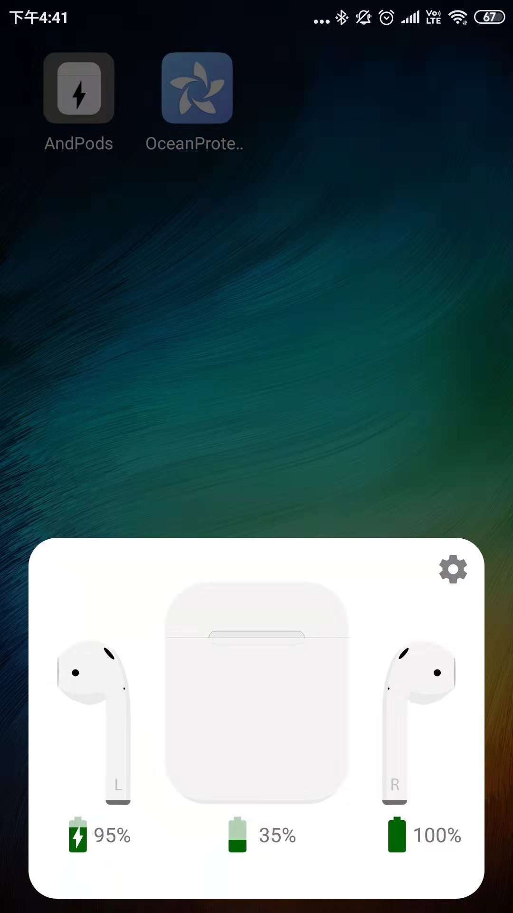
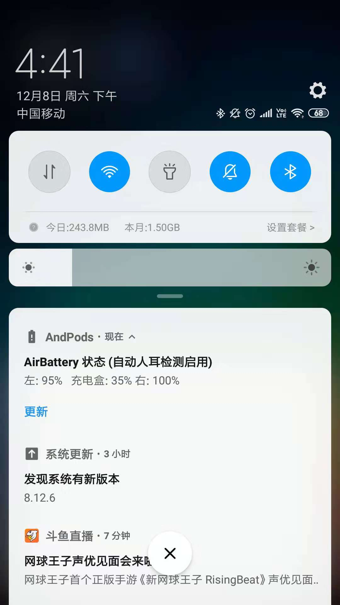
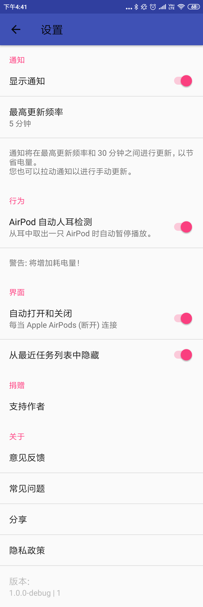

应用
AndPods是为了解决Android用户使用AirPods无法查看电量等信息而开发的一款APP。 用户在耳机连接状态下，打开APP能很方便的查看AirPods的电量，并可以由用户的喜好设置相应的功能控制等。
  
联系我们
我们由几名经验丰富的开发者和UI设计师组建的小团队
如果您有任何对本产品的意见或者建议，欢迎发送到邮箱：xiaolongonly@gmail.com反馈，我们很乐意收到您的邮件！